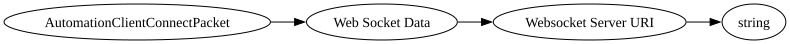

| Purpose: | Initiates websocket connection |
| Notes: | Only used though command to connect to server URLs. This is primarily used by EDU for connecting to their companion apps and other external applications through web sockets. Some mods/3rd party packs use it as well. |

| Field Name | Field Type | Field Constraints | Field Notes |
|---|---|---|---|
| Web Socket Data | WebSocketPacketData |